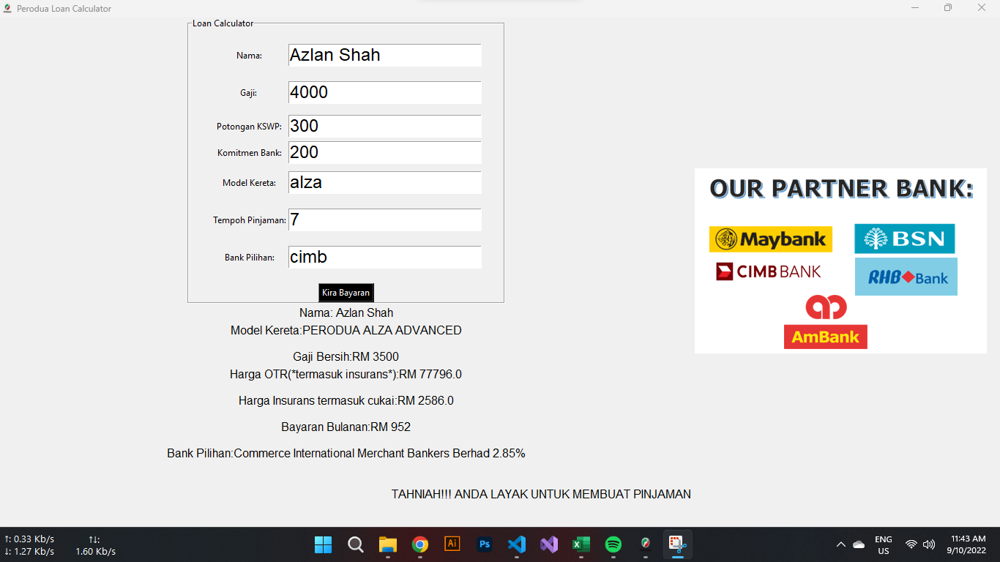
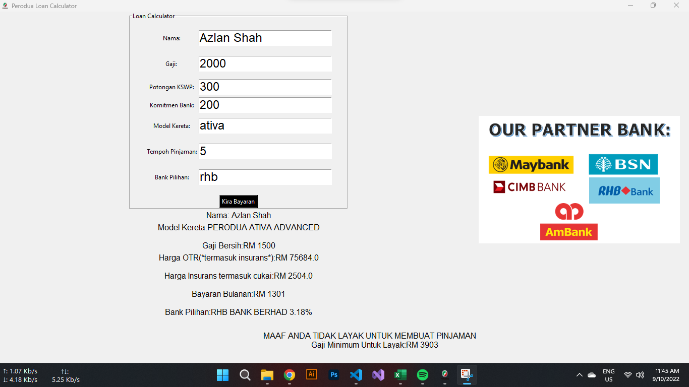
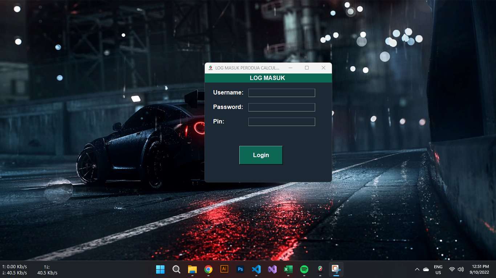

PERODUA LOAN CALCULATOR
Secara Am,Perisian ini menggunakan Language python dan module tkinter sebagai Graphical User Interface. Perisian ini juga dapat menyokong semua model kereta perodua termasuk: Myvi Advance,Alza Advance,Axia Advance,Aruz Advance,Bezza Advance,Ativa Advance.Selain itu,bank yang menyokong pengiraan dari segi kadar faedah:Maybank,CIMB,RHB,BSN dan AMBANK.Segala Database berkenaan Model Kereta dan Harga Semasa disimpan di MYSQL. Oleh Hal yang demikian,ia akan memudahkan pengguna untuk mendapatkan harga terkini setiap model dengan hanya memerlukan capaian internet.
Ini adalah GUI yang akan dipaparkan dan perlu dilengkapkan oleh pengguna.Keputusan berserta maklumat akan dipaparkan dibawah samaada layak ataupun sebaliknya.
Kalkulator ini juga membantu pengguna mengenalpasti gaji minimum untuk dikategorikan layak.
Perisian ini juga dilengkapi dengan system log masuk.Bagi memberi sistem untuk mengenalpasti pengguna.
DAFTAR SEBAGAI SOFTWARE TESTER/DEVELOPER